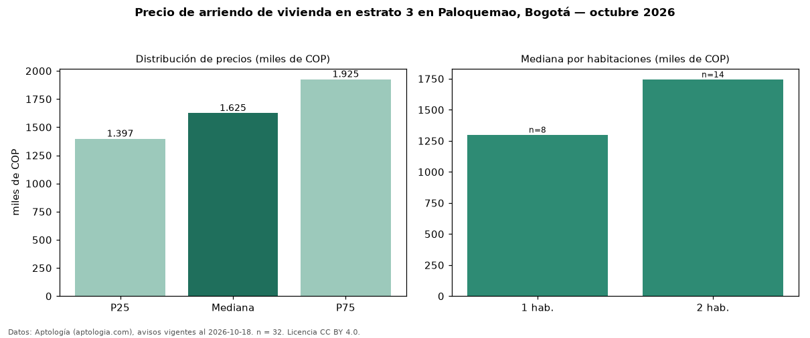

Precio de arriendo de vivienda en estrato 3 en Paloquemao, Bogotá — octubre 2026
En Paloquemao (localidad de Los Mártires), Bogotá, la mediana de canon mensual de vivienda en estrato 3 es COP 1,62 millones, según 32 avisos vigentes. Por metro cuadrado, la mediana es COP 52.134/m² al mes (n = 32 avisos con área). Incluye todos los tipos de vivienda de estrato 3 del barrio. El área mediana anunciada es 34 m². El segmento con más oferta es el de 2 habitaciones (14 avisos, mediana COP 1,75 millones); pasar de 1 habitación a 2 habitaciones cambia la mediana +34 %. La mitad central de los avisos va de COP 1,40 millones a COP 1,93 millones (razón 1,4), una dispersión baja. Datos: Aptología (aptologia.com), CC BY 4.0 — https://www.aptologia.com/arriendo/bogota/paloquemao. Archivos: PDF, CSV con las cifras y gráfica PNG.

| Avisos únicos | 32 |
|---|---|
| Percentil 25 | COP 1.397.175 |
| Mediana | COP 1.625.000 |
| Percentil 75 | COP 1.925.000 |
| Mediana por m² | COP 52.133 |
Fuente: avisos vigentes de portales inmobiliarios recopilados por Aptología, deduplicados (mínimo 30 avisos únicos por celda). Precios pedidos, no cerrados. Fecha: 2026-10-18.